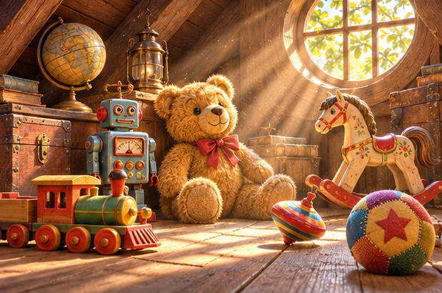
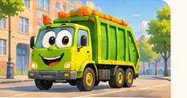
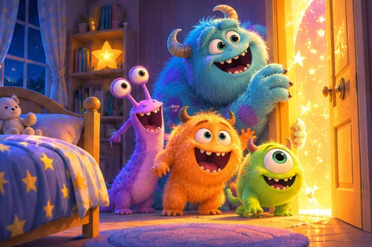
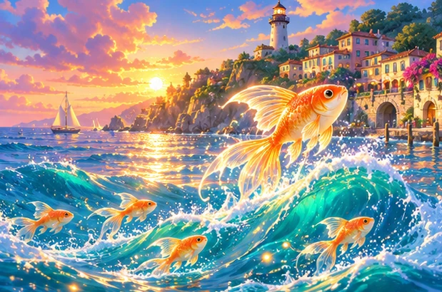
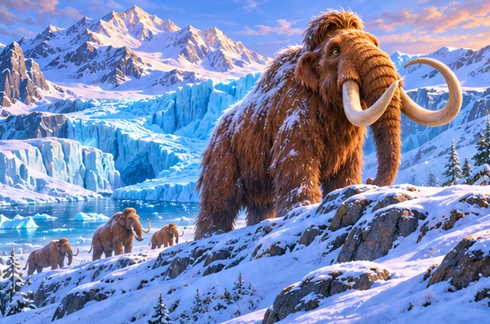
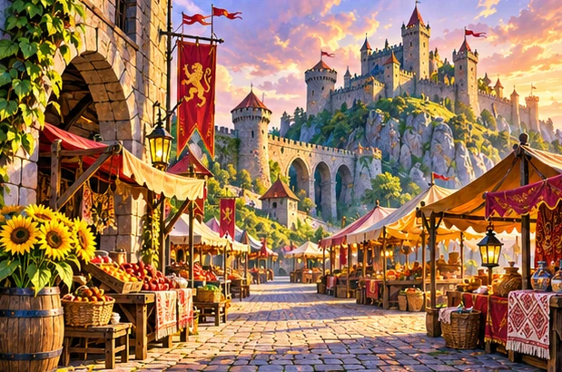
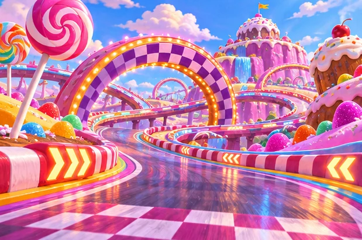
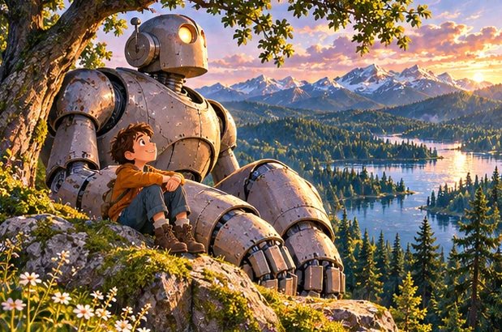
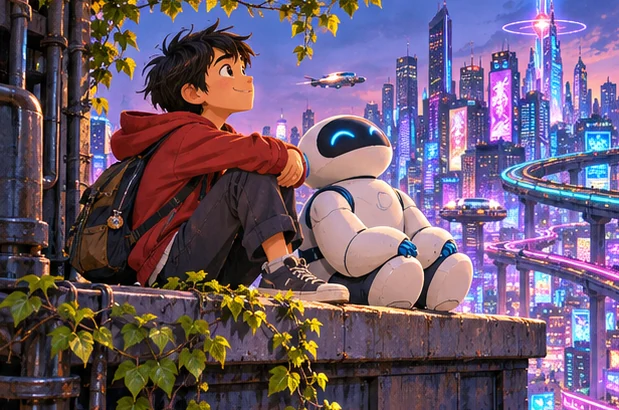
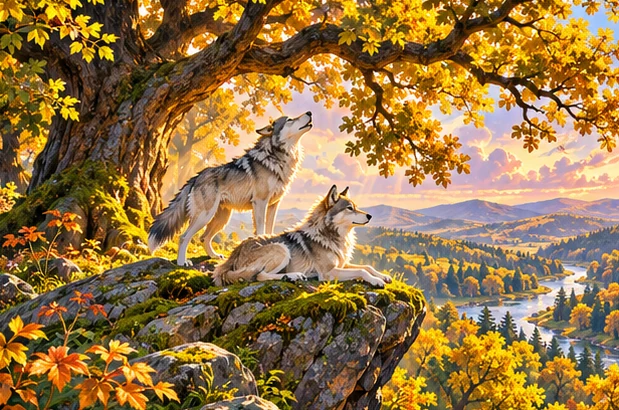

1995·США·81 хв·3+
Toy Story
Улюблена іграшка ревнує до нової. Про те, що дружба починається там, де двоє перестають змагатися за одне місце.
Де шукатиsweet.tv або Megogoліцензія Disney · український дубляж
Питання після переглядуЧому Вуді спочатку не любив Базза?

2020·США·25 хв / серія·3+
Trash Truck
Шестирічний Генк і його найкращий друг — величезна вантажівка. Дуже проста, дуже добра історія про щоденну дружбу.
Де шукатиNetflixпрацює в Україні, український інтерфейс
Питання після переглядуЩо ви з другом любите робити разом найбільше?

2001·США·92 хв·4+
Monsters, Inc.
Монстр, який мав пугати дітей, стає опікуном маленької дівчинки. Заодно розвертає дитячий страх темряви з ніг на голову.
Де шукатиsweet.tv або Megogoліцензія Disney · український дубляж
Питання після переглядуЧому Салліван вирішив захищати Бу, хоча це було небезпечно?

2010·США·22 хв / серія·4+
My Little Pony: Friendship Is Magic
Серіал, у якому дружба — буквально тема кожної серії: сварки, ревнощі, вибачення, уміння не кидати своїх.
Де шукатиNetflixпрацює в Україні, український інтерфейс
Питання після переглядуЯка з поні найбільше схожа на тебе?

2008·Японія·101 хв·4+
崖の上のポニョ
Хлопчик Сосуке знаходить рибку й обіцяє її захищати. Про обіцянку, яку дитина дає і дотримує.
Де шукатиNetflixбібліотека Ghibli · українського дубляжу може не бути
Питання після переглядуСосуке пообіцяв піклуватися про Понйо. Чи складно дотримувати обіцянку?

2008·США·98 хв·5+
WALL·E
Перші сорок хвилин майже без слів. Робот, який прибирає Землю і доглядає росток, — найтихіше кіно про турботу.
Де шукатиsweet.tv або Megogoліцензія Disney · український дубляж
Питання після переглядуЯк ВОЛЛ·І показував, що дбає про ЕВУ, якщо він майже не говорив?

2012·Франція·79 хв·5+
Ernest et Célestine
Ведмідь і мишка дружать, хоча «так не можна». Намальовано акварельно, сказано твердо: дружба важливіша за правила про те, хто з ким може.
Де шукатиПрокат: Megogo, Apple TVчасто лише з субтитрами
Питання після переглядуЧому всі були проти їхньої дружби?

2002·США·81 хв·5+
Ice Age
Троє, які терпіти не можуть одне одного, несуть людське дитинча додому — і стають родиною по дорозі.
Де шукатиsweet.tv або Megogoліцензія Disney · український дубляж
Питання після переглядуЯк вороги стали друзями?

2018·Україна·89 хв·6+
Мандрівний актор рятує принцесу від чарівника. Легка пригода українською з живими жартами — добра перша «велика» казка.
Де шукатиMegogo, sweet.tvукраїнське виробництво
Питання після переглядуРуслан не був лицарем. Що робило його сміливим?

2009·США·96 хв·6+
Up
Старий піднімає дім на повітряних кульках, щоб виконати обіцянку дружині, — і отримує несподіваного онука. Перші десять хвилин — найчесніша розмова про втрату в мультиплікації.
Де шукатиsweet.tv або Megogoліцензія Disney · український дубляж
Питання після переглядуЧому Карл спочатку не хотів ні з ким говорити?
2016·США·108 хв·6+
Zootopia
Крільчиха-полісменка і лис-шахрай розплутують справу, а заодно свої упередження. Доступна розмова про стереотипи.
Де шукатиsweet.tv або Megogoліцензія Disney · український дубляж
Питання після переглядуЧи бувало, що про тебе подумали неправду, бо «такі, як ти, завжди так»?

2021·США·95 хв·6+
Luca
Двоє морських хлопців літують у містечку, приховуючи, хто вони. Літо, велосипед і дружба, яка дає смілість.
Де шукатиsweet.tv або Megogoліцензія Disney · український дубляж
Питання після переглядуЩо Лука зміг зробити тільки завдяки Альберто?

2012·США·101 хв·6+
Wreck-It Ralph
Поганець із гри хоче бути хорошим, а дівчинка-«глюк» — гонщицею. Дружба двох, яких нікуди не брали.
Де шукатиsweet.tv або Megogoліцензія Disney · український дубляж
Питання після переглядуЧому Ральфа вважали поганим, хоча він таким не був?

2007·США·111 хв·6+
Ratatouille
Щур, який готує, і кухар, який не вміє. Удвох вони — одна людина, і це найточніша картинка партнерства.
Де шукатиsweet.tv або Megogoліцензія Disney · український дубляж
Питання після переглядуУ чому ви з другом добре доповнюєте одне одного?

2010·США·98 хв·6+
How to Train Your Dragon
Хлопець, якому не вдається бути «як усі», знаходить спільну мову з тим, кого всі бояться. Про сміливість не бити.
Де шукатиsweet.tv або MegogoDreamWorks · український дубляж
Питання після переглядуЧому Гикавка не захотів убити дракона?

1999·США·86 хв·7+
The Iron Giant
Хлопчик дружить із бойовим роботом і вчить його, що той не зброя. «Ти є тим, кого ти вибираєш» — і дуже сильний фінал.
Де шукатиПрокат: Megogo, Apple TVчасто лише з субтитрами
Питання після переглядуЧи може хтось змінитися, якщо його таким зробили?

2019·Іспанія·96 хв·7+
Klaus
Егоїстичний листоноша й самотній тесля з іграшками міняють місто, де всі ворогують. «Добрий вчинок завжди породжує інший» — тут це сюжетний механізм.
Де шукатиNetflixпрацює в Україні, український інтерфейс
Питання після переглядуЯкий добрий вчинок хтось зробив для тебе цього тижня?

2014·США·102 хв·7+
Big Hero 6
Хлопчик після смерті брата отримує робота-медика, який наполегливо питає: «Як ти оцінюєш свій біль?». Про помсту, яка не лікує.
Де шукатиsweet.tv або Megogoліцензія Disney · український дубляж
Питання після переглядуЧим Беймакс допомагав Хіро насправді?
2018·Велика Британія·25 хв / серія·7+
Hilda
Безстрашна дівчинка переїжджає з лісу в місто і знаходить друзів. Її мама — рідкісний приклад дорослої, яка вміє злитися й лагодити стосунки.
Де шукатиNetflixпрацює в Україні, український інтерфейс
Питання після переглядуЯк Хільда поводиться, коли їй страшно?

2001·США·90 хв·7+
Shrek
Огр, віслюк і принцеса з секретом. Голосно, смішно і про те, що приймати себе доводиться вголос.
Де шукатиsweet.tv або MegogoDreamWorks · український дубляж
Питання після переглядуЧому Шрек спершу нікого не підпускав?

2001·Японія·125 хв·8+
千と千尋の神隠し
Дівчинка працює в лазні для духів, щоб урятувати батьків. Страшно, красиво і про те, як страх перетворюється на витримку.
Де шукатиNetflixбібліотека Ghibli · українського дубляжу може не бути
Питання після переглядуЩо зробило Тіхіро сміливою — вона не боялася чи боялася і все одно йшла?

2022·США·100 хв·8+
Turning Red
Тринадцятирічна Мей перетворюється на панду, коли сильно хвилюється. Про злість, яку забороняли, і про чотирьох подруг, що просто стоять рядом.
Де шукатиsweet.tv або Megogoліцензія Disney · український дубляж
Питання після переглядуЩо Мей робила зі своєю злістю? А що робиш ти?

2005·США·23 хв / серія·9+
Avatar: The Last Airbender
Три сезони про команду дітей, яка зупиняє війну. Рідкісний серіал, де в кожного — своя травма, і де ворог отримує шлях до змін.
Де шукатиNetflixпрацює в Україні, український інтерфейс
Питання після переглядуХто з команди підтримує інших найбільше?

2020·Ірландія·103 хв·9+
Wolfwalkers
Донька англійського ловця вовків дружить із дівчинкою, що обертається вовчицею. Про страх, який насаджують дорослі, і про вірність другові проти всіх.
Де шукатиApple TVвходить у платний iCloud+, від $0.99 на місяць
Питання після переглядуЩо Робін довелося зробити, щоб не зрадити друга?